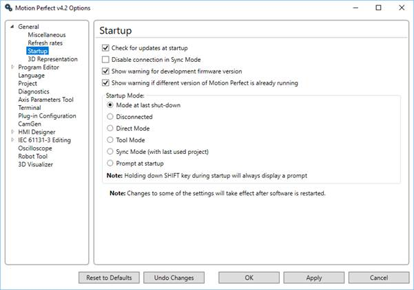

If this box is checked Motion Perfect will perform a check using the Internet to see if a more recent version of the application is available.
When this is checked Motion Perfect will not connect in Sync Mode. This is useful if as user needs to connect to the controller for setting up purposes but does not need access to the programs.
If this is checked then Motion Perfect will warn the user when trying to connect (in Tool or Sync Mode) to a controller which has development firmware. Development firmware is occasionally given to specific customers for test purposes. As development software is not fully tested it is not recommended for use in a production environment.
This should be enabled.
If this is checked Motion Perfect will display a warning if any other version of Motion Perfect is already running.
This controls which connection mode Motion Perfect attempts to go into on start-up.